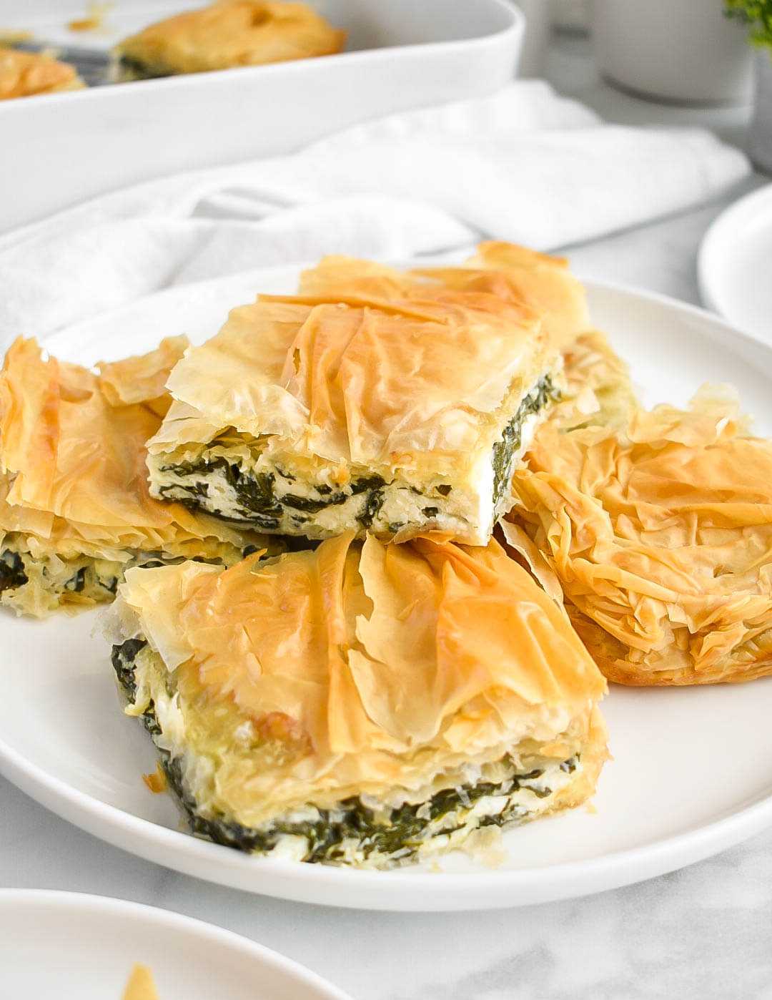

Spanakopita

Description
Spanakopita is one of the only things I currently know how to make and
my family still says I mess up the recipe. This dish is a simple to make
meal that consists of primarly cheese, spinach and olive oil.
Ingredients for the spinich and feta filling
- 16 oz. frozen chopped spinach
- 2 bunches flat-leaf parsley
- 1 large yellow onion
- 2 garlic cloves
- 2 tbsp extra virgin olive oil
- 4 eggs
- 10.5 oz feta cheese
- 2 tsp dried dill weed
- freshly-ground black pepper
Ingredients for the crust
- 16 oz package Fillo Factory Organic Dough
- 1 cup extra virgin olive oil
Cooking Instructions
- Preheat the oven to 325 degrees.
- Drain the spinach thoroughly and squeeze the excess liquid out by hand.
- In a mixing bowl, add the spinach and remaining filling ingredients.
Stir until well-combined.
- Unroll the phyllo sheets and place them between two slightly damp kitchen cloths.
- Prepare a 9 1/2" x 13" baking dish by brushing the bottom and sides with olive oil.
- Line the dish with two sheets of phyllo, letting them cover the sides of the dish. Brush with olive oil.
Add two more sheets in the same manner, and brush them with olive oil. Repeat until
two-thirds of the phyllo is used up.
-
evenly spread the spiniach and feta filling over the crust. Top with two more sheets,
and brush with olive oil.
- continue to layer the phyllo sheets, two at a time, brushing with olive
oil until you have used up all the sheets. Brush the very top layer with olive
oil, and sprinkle with just a few drops of water.
- bake in the oven for 30 minutes and allow 10 minutes to sit after taking out of the oven.